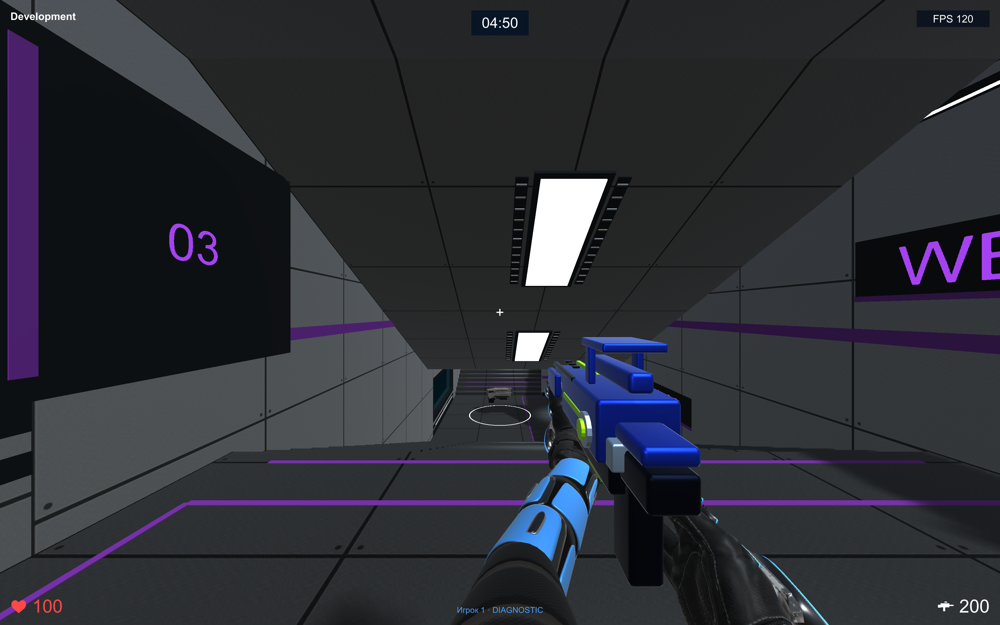

01 / PC
Windows
64-разрядная Windows · установщик
Открыть релизы GitHub ↗Выберите установщик своей платформы на GitHubСоберите друзей на одном экране.
Выберите арену. И пусть решает меткость.

Локальные матчи, боты и разные арены. Игра запускается на вашем компьютере — скачайте её один раз, а следующие версии получайте прямо из главного меню.
Кандидаты готовятся к проверке
64-разрядная Windows · установщик
Открыть релизы GitHub ↗Выберите установщик своей платформы на GitHubApple Silicon · установщик .pkg
Открыть релизы GitHub ↗Выберите установщик своей платформы на GitHubУстановщики скачиваются из GitHub Releases. Исходный код ↗
Это тестовые установщики без сертификатов разработчика ОС. Windows и macOS могут показать предупреждение при установке. Инструкция ниже ↘
Загрузка начинается только по вашему решению, из главного меню.
Пакет скачивается в фоне. В меню виден прогресс загрузки.
Когда пакет готов, нажмите «Перезапустить» или выйдите и запустите игру позднее.
Настройки и профили сохраняются между обновлениями. Для самой первой установки понадобится пакет с этой страницы.
Установите первую тестовую версию. Создайте профиль и сыграйте матч. В главном меню нажмите «Обновить», дождитесь готовности и нажмите «Перезапустить». Проверьте новую версию, профиль и настройки. Повторите из чистой установки, применяя обновление обычным выходом и следующим запуском.